Dialogs, Wizards and Views
It shows how javascript can interact with the workbench and how to run a web application (a brick game) inside a view.
The views can be created using Eclipse with PDE only, but the inclusion of web technology like the Wild Web Developer plug-in is recommended.
You can create a plug-in with a browser-technology-view via: File > New > Other... > Plug-in Project.
On the last page of the wizard, you can select the template.
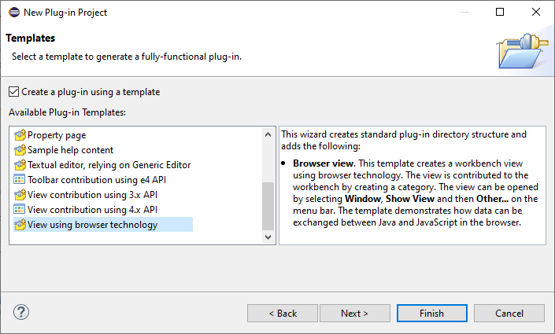
Press Next to select the type of content you want to experiment with.
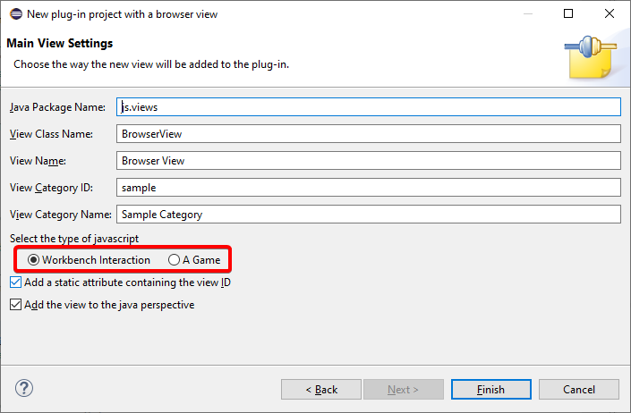
The wizards are also accessible when you create a new view via the Extensions tab of the Manifest editor.
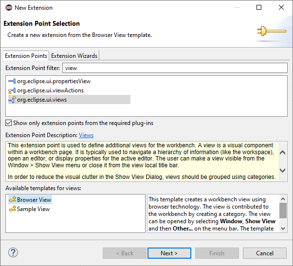
The Workbench Interaction view shows how to interact with the workbench using javascript.
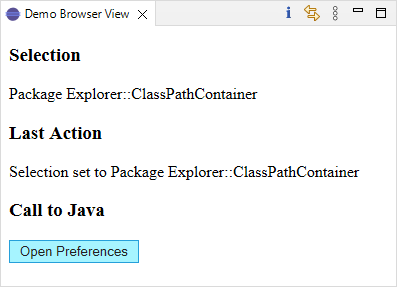
This Game view shows how you run a standalone web application inside a view.
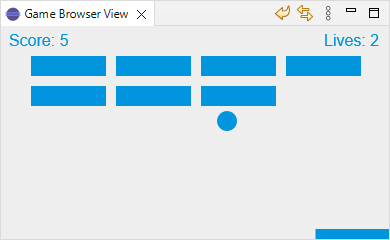
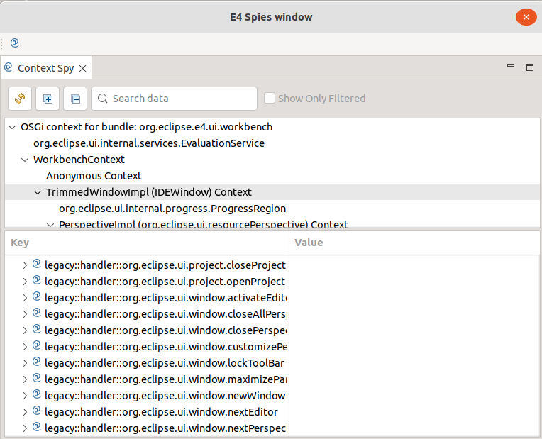
Editors
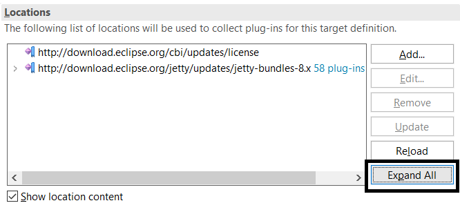
If the locations are expanded, it is possible to collapse all as shown below.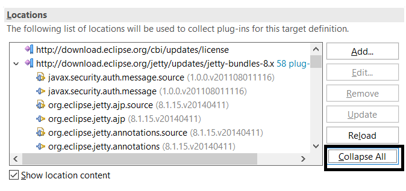

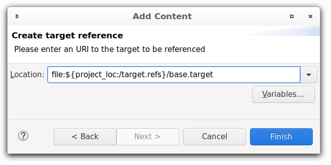
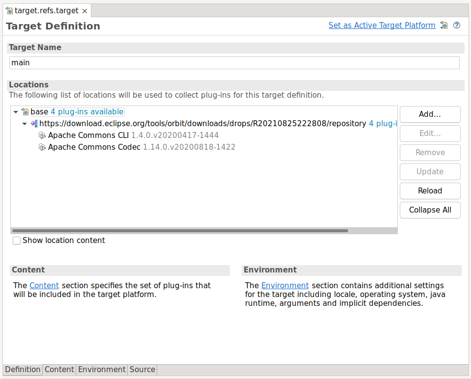
This could be used for different purposes:- You could use a target from a remote location (e.g. github-repository using http-protocol) in your local IDE.
- You could use a target deployed at a maven repository using the mvn:<groupid>:<artifactid>:<version> (this requires m2eclipse with PDE integration)
- You could extend an existing local target using eclipse-variables
- You could combine any of the above options
API Tools
visibility:=reexport is removed for any required bundle, API tools now reports a breakage as shown below.

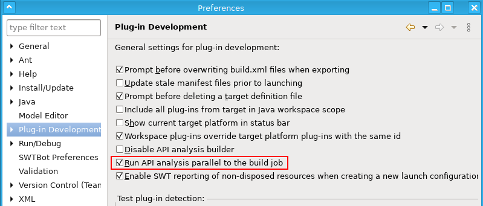
PDE Launching
- To automatically add included and required features and their content
- To obey the specified version match-rules of required plug-ins and features
- To ignore included plug-ins or features if the specified environment does not match the target environment
When you Add Required Plug-ins to a plug-in based Eclipse/Equinox application launch, 'test'-fragments are not added anymore only because their host participates in the launch. The same applies for launches based on features where requirements are added automatically. Furthermore the handling of multiple versions of bundles with the same symbolic-name has been refined for plug-in and feature based launches.